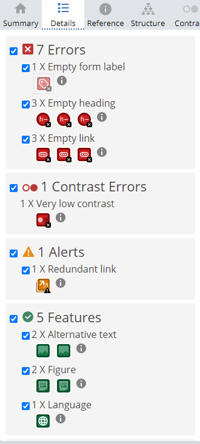

Vurdering av universell utforming:
Analyse av forside:
Disse to linkene mine er kontakt oss-knappen og hjem-knappen i navbaren på forsiden min. Jeg får ikke endret på dette fordi i deleksamen 2 står det at forsiden skal inneholde en kontakt oss-knapp som fører til kontakt oss-siden samtidig som at hjem-knappen på navigasjonen skal føre til forsiden. Dette er for å skape bedre og enklere brukeropplevelse for leseren.
Analyse av UU-vs-SEO siden
